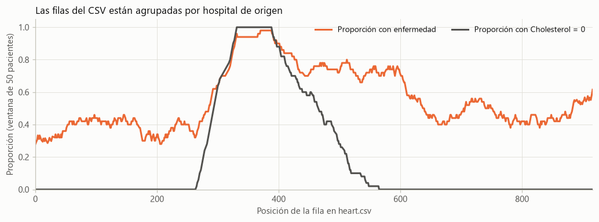
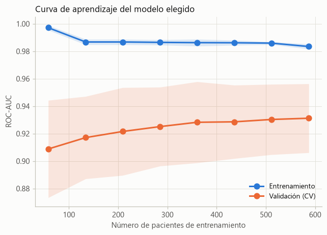

Predicción de enfermedad cardíaca con aprendizaje automático y MLOps local: comparación de 13 clasificadores con validación sin fuga de datos#
Integrantes |
Martínez Pulido Valerie · Basto Martínez Abrahan · Esguerra Fernández Rubén |
Curso |
Machine Learning — Dr. Lihki Rubio |
Entrega |
Tarea 2: proyecto integrador de aprendizaje automático (sección 10.12) |
Notebooks ejecutables |
1_model_leakage_demo.ipynb (etapa 1) |
Repositorio |
RubenEsg/Machine-Learning-Tarea-2 (API, Docker, Kubernetes, CI) |
Monitoreo |

Resumen#
Contexto. Las enfermedades cardiovasculares son la principal causa de muerte en el mundo y detectarlas a tiempo reduce sus complicaciones. Propósito. Desarrollar, evaluar y desplegar un modelo que estime la probabilidad de enfermedad cardíaca a partir de 11 variables clínicas, aplicando prácticas de MLOps en un entorno local. Metodología. Se usó el dataset Heart Failure Prediction (918 pacientes de cinco bases hospitalarias). Los datos se dividieron de forma estratificada en entrenamiento (80 %) y prueba (20 %) antes de cualquier transformación, y la imputación de faltantes ocultos, la codificación y el escalado se ajustaron dentro de Pipelines. Se compararon 13 clasificadores con GridSearchCV y validación cruzada estratificada, se demostraron distintos tipos de fuga de datos y se contrastaron los modelos con el test de DeLong. Resultados. El modelo final, un Random Forest, alcanzó en el conjunto de prueba un AUC de 0.928 (IC 95 %: 0.886 a 0.963) y una exactitud de 0.891, con sensibilidad de 0.931 y especificidad de 0.841; los mejores modelos resultaron estadísticamente equivalentes. El modelo se sirve con una API FastAPI contenerizada en Docker, con manifiestos de Kubernetes, integración continua en GitHub Actions y monitoreo de deriva con Evidently. Conclusión. Un flujo con particiones cuidadosas y validación sin fuga produce estimaciones de desempeño confiables, pero el origen multicéntrico de los datos exige validar el modelo externamente antes de cualquier uso clínico.
Palabras clave: enfermedad cardíaca; aprendizaje automático; fuga de datos; validación cruzada; test de DeLong; Random Forest; MLOps; FastAPI; Kubernetes; Evidently.
1. Introducción#
El enunciado del proyecto integrador propone construir un modelo de clasificación binaria que prediga si un paciente tiene enfermedad cardíaca (HeartDisease = 1) o no (0), y llevarlo a producción de manera local recorriendo el ciclo de vida de un modelo de aprendizaje automático: estructura del proyecto (etapa 0), análisis exploratorio y preprocesamiento sin fuga de datos (etapa 1), entrenamiento con validación segura (etapa 2), API con FastAPI y Docker (etapa 3), orquestación con Kubernetes (etapa 4), integración continua con GitHub Actions (etapa 5) y monitoreo de deriva con Evidently (etapa 6).
Este informe resume la metodología y los resultados. El detalle está en los capítulos de cada etapa: los notebooks de las etapas 1 y 2 contienen todo el código y sus salidas, y las páginas de las etapas 0 y 3 a 6 muestran los archivos del repositorio y la evidencia de que funcionan.
2. Metodología#
2.1 Población y muestra#
Fuente: dataset Heart Failure Prediction publicado en Kaggle por fedesoriano (2021), que combina cinco bases del repositorio UCI recolectadas en los años ochenta: Cleveland (303 registros), Hungría (294), Suiza (123), Long Beach VA (200) y Statlog (270). De los 1 190 registros se eliminaron 272 duplicados.
Muestra: 918 pacientes evaluados por sospecha de enfermedad coronaria en centros de Estados Unidos, Hungría y Suiza; 725 hombres y 193 mujeres, de 28 a 77 años (mediana de 54). 508 pacientes (55.3 %) tienen enfermedad cardíaca.
Selección: muestra de conveniencia de pacientes que acudieron a evaluación cardiológica, no una muestra aleatoria de la población general, y con distinta prevalencia según el hospital de origen.
Partición: 734 pacientes de entrenamiento y 184 de prueba (estratificada por
HeartDisease,random_state=42).
2.2 Variables (diccionario de características)#
Variable |
Tipo |
Descripción |
Valores |
|---|---|---|---|
|
numérica |
edad del paciente |
años (28 a 77) |
|
categórica |
sexo |
|
|
categórica |
tipo de dolor torácico |
|
|
numérica |
presión arterial en reposo |
mm Hg (0 = no medida) |
|
numérica |
colesterol sérico |
mg/dl (0 = no medido) |
|
binaria |
glucosa en ayunas mayor de 120 mg/dl |
1 sí, 0 no |
|
categórica |
electrocardiograma en reposo |
|
|
numérica |
frecuencia cardíaca máxima alcanzada |
60 a 202 latidos por minuto |
|
categórica |
angina inducida por ejercicio |
|
|
numérica |
depresión del segmento ST inducida por el ejercicio |
−2.6 a 6.2 |
|
categórica |
pendiente del segmento ST en el pico del ejercicio |
|
|
objetivo |
diagnóstico de enfermedad cardíaca |
1 sí, 0 no |
2.3 Técnicas#
Preprocesamiento dentro del
Pipeline: los ceros imposibles deRestingBPyCholesterolse imputan con la mediana (SimpleImputer), las variables categóricas se codifican conOneHotEncodery se escala conMinMaxScaleroStandardScaler.Modelos: los 13 clasificadores del curso: k-NN; regresión logística y LinearSVC; Naive Bayes gaussiano y Bernoulli; árbol de decisión, bagging, Random Forest, AdaBoost, Gradient Boosting y XGBoost; SVC con kernel RBF y perceptrón multicapa, más un
DummyClassifiercomo línea base.Optimización y selección:
GridSearchCVcon validación cruzada estratificada de 5 folds con barajado, eligiendo por AUC. En la etapa 2, un únicoGridSearchCVelige a la vez el modelo, el escalado y los hiperparámetros (cap. 10.11 del curso), y la validación cruzada anidada estima el desempeño de ese procedimiento.Evaluación: AUC, exactitud (accuracy), precisión, sensibilidad, especificidad y F1; matriz de confusión; curva ROC; intervalo de confianza bootstrap del AUC y análisis del umbral con predicciones out-of-fold.
MLOps: API REST con FastAPI, contenedor Docker, despliegue en Kubernetes (Minikube), integración continua con GitHub Actions y monitoreo de deriva con Evidently.
2.4 Diseño general#
Estudio observacional, retrospectivo y de corte transversal con datos secundarios, orientado al desarrollo y la validación interna de un modelo predictivo de diagnóstico. El diseño experimental usa una partición de retención (holdout) estratificada: la validación cruzada sobre el entrenamiento sirve para todas las decisiones y el conjunto de prueba solo para reportar.
2.5 Validez#
Grupos de datos coherentes: la partición estratificada conserva la proporción de enfermos (55.3 % en entrenamiento y 55.4 % en prueba) y no comparte pacientes entre conjuntos. Como el archivo está ordenado por hospital, la validación cruzada baraja los folds. Evidently confirma que entrenamiento y prueba tienen la misma distribución: solo 1 de 11 variables aparece con deriva, lo esperable por azar.
Automatizado (obtención de datos): el CSV se descarga de Kaggle y se versiona en el repositorio; los notebooks verifican su huella SHA-256 y, si no lo encuentran, lo descargan del repositorio o de Kaggle. En producción, los datos llegan como JSON a la API REST y se validan con Pydantic (tipos, rangos y categorías). Las semillas, las versiones de las librerías y una huella de la partición garantizan que los resultados se puedan reproducir.
Técnicas estadísticas: prueba U de Mann-Whitney y correlación punto-biserial (variables numéricas), chi-cuadrado y V de Cramér (variables categóricas), test de DeLong para AUC correlacionados con corrección de Bonferroni, intervalos bootstrap, y pruebas de Kolmogorov-Smirnov, chi-cuadrado y Z en el monitoreo de deriva.
3. Resultados y discusión#
3.1 Calidad de los datos y particiones#
El dataset no tiene NaN ni duplicados, pero sí faltantes ocultos: 172 pacientes con Cholesterol = 0 y uno con RestingBP = 0. Además, el archivo está ordenado por hospital de origen: el tramo con colesterol no medido tiene una prevalencia mucho mayor (89.9 % de enfermos entre quienes no tienen colesterol medido, contra 47.9 % en el resto, según el entrenamiento). Por eso se barajan los folds (sin barajar, el AUC por fold oscila entre 0.855 y 0.951) y no se agrega un indicador de faltante, que aprovecharía un artefacto de cómo se armó el dataset.
{kind=link}

Figura 1 Proporción móvil de enfermos y de colesterol no medido a lo largo del archivo (pacientes de entrenamiento).#
3.2 Fuga de datos (data leakage)#
Problema |
Efecto observado |
Cómo se evita |
|---|---|---|
Preprocesamiento antes de partir (imputación y escalado) |
pequeño en el AUC (0.919 en ambos casos), pero invalida la evaluación y cambió los hiperparámetros |
ajustar el preprocesamiento dentro del |
Variable construida con la respuesta ( |
AUC = 1.000 aun usando |
quitar variables que no existirán al momento de predecir |
Selección de variables antes de partir |
AUC de 0.74 a 0.76 con ruido puro, cuando lo real es 0.5 |
incluir la selección como un paso del |
Folds sin barajar sobre un archivo ordenado |
AUC por fold de 0.855 a 0.951 |
|
El ejemplo del enunciado da AUC = 1.000 tanto «con fuga» como «sin fuga» porque la variable leaky_feature sigue en el flujo correcto; al quitarla, el AUC es 0.924.
3.3 Comparación de modelos (etapa 1)#
Modelo |
AUC CV (± d.e.) |
Accuracy CV |
AUC prueba |
Accuracy prueba |
|---|---|---|---|---|
XGBoost |
0.9332 ± 0.0276 |
0.8597 |
0.9295 |
0.8859 |
Random Forest |
0.9313 ± 0.0251 |
0.8529 |
0.9281 |
0.8967 |
Gradient Boosting |
0.9308 ± 0.0281 |
0.8556 |
0.9284 |
0.8804 |
Bagging (árboles) |
0.9297 ± 0.0296 |
0.8624 |
0.9303 |
0.9076 |
AdaBoost |
0.9243 ± 0.0374 |
0.8638 |
0.9270 |
0.8750 |
MLP |
0.9235 ± 0.0328 |
0.8501 |
0.9302 |
0.9022 |
k-NN |
0.9230 ± 0.0316 |
0.8542 |
0.9375 |
0.8967 |
Regresión logística |
0.9227 ± 0.0348 |
0.8529 |
0.9309 |
0.8967 |
LinearSVC |
0.9223 ± 0.0353 |
0.8474 |
0.9293 |
0.8804 |
SVC (RBF) |
0.9194 ± 0.0329 |
0.8461 |
0.9143 |
0.8152 |
Naive Bayes Bernoulli |
0.9192 ± 0.0364 |
0.8420 |
0.9264 |
0.8750 |
Naive Bayes gaussiano |
0.9180 ± 0.0375 |
0.8461 |
0.9244 |
0.8478 |
Árbol de decisión |
0.9120 ± 0.0236 |
0.8379 |
0.8961 |
0.8261 |
Línea base (Dummy) |
0.5000 ± 0.0000 |
0.5531 |
0.5000 |
0.5543 |
El ranking se ordena por el AUC de validación cruzada; las columnas de prueba solo se reportan. Los ensambles de árboles lideran, pero están prácticamente empatados: la mayor diferencia entre ellos (0.0035) es unas 8 veces menor que la desviación entre folds. Según el test de DeLong, en prueba solo el árbol de decisión y la línea base son significativamente peores que el primero del ranking. Que k-NN tenga el mejor AUC en prueba siendo séptimo en validación cruzada muestra por qué no se debe elegir con el conjunto de prueba: con 184 pacientes esas diferencias son ruido.

Figura 2 AUC de validación cruzada (media ± 1 desviación estándar) y AUC en prueba de cada modelo.#
3.4 Modelo final (etapa 2)#
XGBoost no se desplegó porque su versión actual no es compatible con Python 3.10, el de la imagen Docker, y agregaría unos 450 MB a la imagen. Una única búsqueda sobre las 11 familias de scikit-learn (144 combinaciones) eligió Random Forest (max_depth=8, min_samples_leaf=3, max_features="sqrt", 300 árboles).
Métrica |
Valor |
|---|---|
AUC de validación cruzada (5 folds) |
0.931 ± 0.025 |
AUC de validación cruzada anidada |
0.921 ± 0.010 |
AUC en prueba |
0.928 (IC 95 %: 0.886 a 0.963) |
Accuracy en prueba |
0.891 |
Sensibilidad / especificidad (umbral 0.5) |
0.931 / 0.841 |
Precisión (valor predictivo positivo) |
0.880 |
En los 184 pacientes de prueba, el modelo detecta a 95 de 102 enfermos y descarta correctamente a 69 de 82 sanos. La brecha entre el AUC de entrenamiento (≈ 0.98) y el de validación (0.931) es propia de Random Forest; la curva de aprendizaje muestra que la validación sigue mejorando con más pacientes, y la coincidencia entre la validación cruzada anidada y la prueba indica que la estimación es honesta.

Figura 3 Curva ROC y matriz de confusión del modelo final en el conjunto de prueba.#
{kind=link}

Figura 4 Curva de aprendizaje del modelo final (validación cruzada sobre el entrenamiento).#
3.5 Despliegue y monitoreo (etapas 3 a 6)#
El Pipeline completo se exporta a app/model.joblib y lo sirve una API FastAPI (POST /predict) que valida cada entrada. La imagen Docker usa las mismas versiones de scikit-learn y numpy con que se entrenó el modelo; Kubernetes lo despliega con 2 réplicas y health checks (verificado en Minikube: 2/2 pods listos, tráfico repartido entre ambas réplicas y recuperación automática al eliminar un pod), y GitHub Actions ejecuta en cada push el linting, las pruebas automáticas y la construcción de la imagen. Evidently no detecta deriva entre entrenamiento y prueba (1 de 11 variables, lo esperable por azar) y sí la detecta al simular pacientes de otro hospital con una partición secuencial (8 de 11 variables).
3.6 Discusión#
Los modelos empatan. Con 918 pacientes, los clasificadores competitivos quedan en un rango de AUC de CV de 0.912 a 0.933 y no se distinguen estadísticamente en prueba. La elección entre ellos depende más del despliegue (dependencias, interpretabilidad) que del desempeño: la regresión logística logra un AUC equivalente al del modelo elegido (p = 0.77) y es más fácil de explicar al equipo médico.
La metodología importa más que el algoritmo. Las fugas de datos pueden producir AUC de 1.000 o de 0.74 con ruido puro; controlar las particiones y ajustar todo dentro del Pipeline fue lo que hizo confiables las cifras.
Umbral clínico. Con el umbral de 0.5 se escapan 7 de 102 enfermos. Con predicciones out-of-fold del entrenamiento, bajarlo a 0.4 sube la sensibilidad de 0.894 a 0.933 a costa de la especificidad; es una decisión que debe tomarse con el equipo clínico.
Limitaciones. Los datos provienen de cinco hospitales con distinta prevalencia y la falta de colesterol depende del origen, por lo que el modelo puede aprender artefactos de la recolección. La validación es interna (una sola partición y validación cruzada) y la muestra no representa a la población general.
Trabajo futuro. Validación externa en otra población, calibración de probabilidades, interpretación de predicciones (por ejemplo con SHAP o LIME) y monitoreo continuo de las solicitudes que reciba la API.
4. Conclusiones#
El flujo completo de MLOps pedido en el enunciado quedó implementado y verificado: notebooks reproducibles, API, imagen Docker, manifiestos de Kubernetes, integración continua y monitoreo de deriva.
Con particiones hechas antes de cualquier transformación, preprocesamiento dentro del Pipeline y el conjunto de prueba reservado para reportar, el modelo final alcanza un AUC de 0.928 en pacientes no vistos, coherente con la validación cruzada anidada (0.921).
Los mejores clasificadores son estadísticamente equivalentes en este dataset; el modelo es un apoyo académico que requiere validación externa y no reemplaza el criterio médico.
Referencias#
DeLong, E. R., DeLong, D. M. y Clarke-Pearson, D. L. (1988). Comparing the areas under two or more correlated receiver operating characteristic curves: a nonparametric approach. Biometrics, 44(3), 837–845.
Detrano, R. et al. (1989). International application of a new probability algorithm for the diagnosis of coronary artery disease. American Journal of Cardiology, 64(5), 304–310.
fedesoriano (2021). Heart Failure Prediction Dataset. Kaggle. https://www.kaggle.com/datasets/fedesoriano/heart-failure-prediction
Janosi, A., Steinbrunn, W., Pfisterer, M. y Detrano, R. (1988). Heart Disease [conjunto de datos]. UCI Machine Learning Repository. https://archive.ics.uci.edu/dataset/45/heart+disease
Müller, A. C. y Guido, S. (2016). Introduction to Machine Learning with Python. O’Reilly Media.
Pedregosa, F. et al. (2011). Scikit-learn: Machine Learning in Python. Journal of Machine Learning Research, 12, 2825–2830.
Rubio, L. Machine Learning [Jupyter Book del curso]. https://lihkir.github.io/MachineLearning/
Sun, X. y Xu, W. (2014). Fast implementation of DeLong’s algorithm for comparing the areas under correlated receiver operating characteristic curves. IEEE Signal Processing Letters, 21(11), 1389–1393.